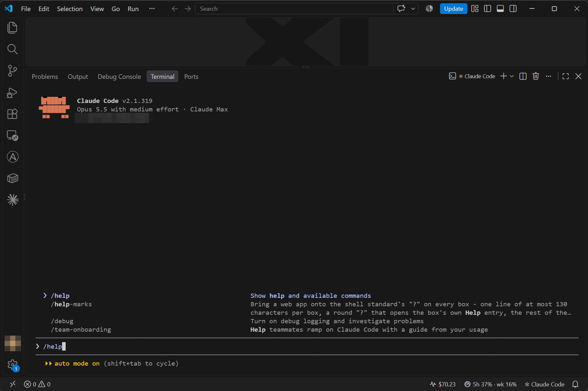
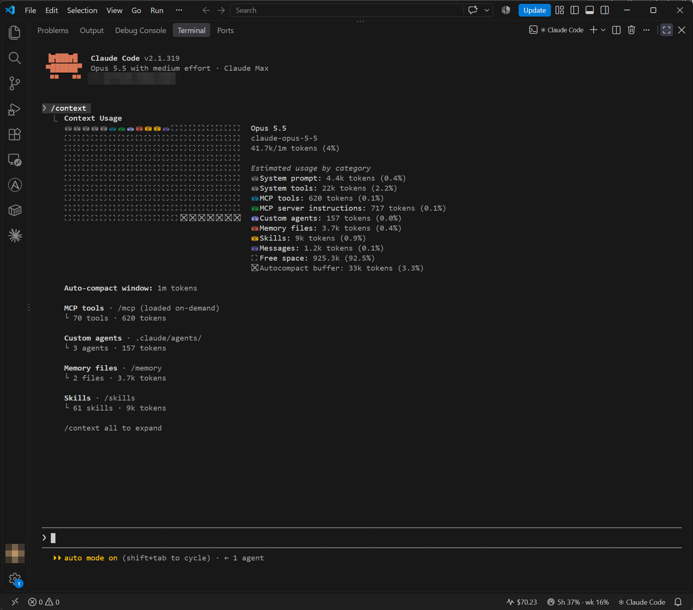
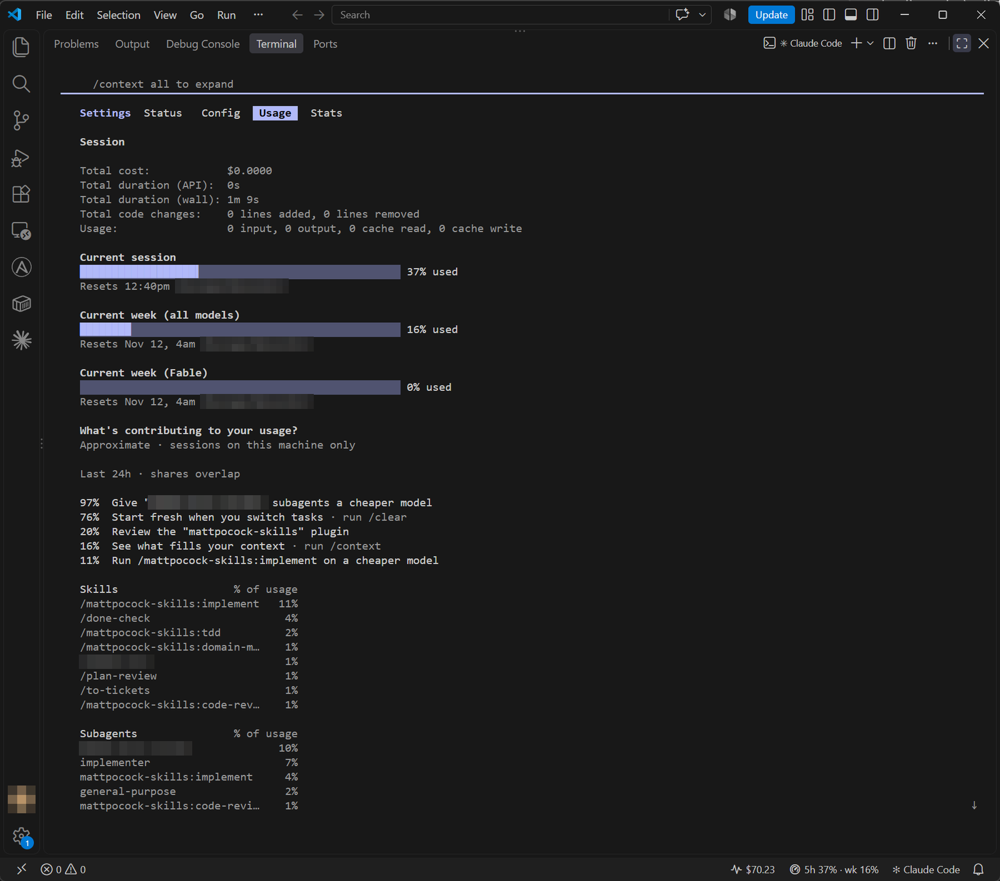

Basic use
Basic commands
In a Claude Code session you write in plain language. Commands that start with a slash control the tool itself. Type / and you see the list.
| Command | What it does |
|---|---|
/help | Shows help and the commands |
/usage | Shows the session's consumption and your plan's usage limits |
/context | Shows how much context has been used |
/compact | Summarizes the conversation and frees context |
/clear | Starts a new conversation with an empty context |
/rewind | Restores the code and/or the conversation to an earlier point |
/init | Creates a CLAUDE.md file for the project |
/memory | Edits CLAUDE.md files and memory |
/resume | Continues an earlier conversation |
/permissions | Shows and edits the permission rules |
/model | Switches the model |
/exit | Ends the session |
Other useful ones: @file adds a file to the conversation, and a ! at the start of a line runs a command directly (for example !git status) and adds the output to the conversation.

Context, /compact and /clear
Claude remembers only what is in the conversation's context: the messages, the files you have read and the output of commands. The context is limited, and in a long conversation it fills up, which makes the answers worse and the consumption higher.
/contextshows what the context contains./compactsummarizes the conversation and continues the same work. You can steer the summary:/compact focus on the script's errors./clearstarts from scratch. Use it when you move to a completely different task. You can find the previous conversation with/resume.- If Claude is still wrong after two corrections, do not correct a third time. Run
/clearand write one new prompt that folds in what you learned.

/clear. When the same task continues but the conversation is long, use /compact.Source: code.claude.com/docs/en/best-practices, checked 11/2026.
Use and limits: /usage
The command /usage shows the cost of the session and how much of your plan's usage limit has been used. The limit is the same as in claude.ai: read the principle in the usage limits section of module 0.
- A long context, many files and a heavy model consume more.
- Check
/usagebefore big work and when the limit starts to approach. - Switching to a smaller model (
/model) for light tasks saves the limit.

Plan mode and /rewind
Plan mode
In plan mode Claude reads and proposes a plan but changes nothing. Switch modes with Shift+Tab (it cycles: Manual, Accept edits, Plan) or start claude --permission-mode plan. With some Windows settings the switch key is Alt+M.
Use plan mode when a change is large or risky: look at the plan first, correct it and allow the implementation only then.
/rewind
Claude Code saves the state before every message you send. The command /rewind (or Esc twice in an empty prompt field) opens a list from which you can restore the code, the conversation or both to the chosen point.
Remove-Item or Move-Item), the change is not tracked and /rewind does not undo it. Save your work in git (module 8): /rewind does not replace version control.Memory levels
Every session starts with an empty context. There are two ways to give Claude lasting information:
- CLAUDE.md is an instruction file that you write. It is loaded in every session. The command
/initcreates a first version of it by analyzing the folder. - Automatic memory (auto memory) is notes that Claude writes itself about your corrections and preferences. They are stored under the user folder
%USERPROFILE%\.claude\projects\.
Together these make six levels. The level tells who writes the file and who it applies to.
| Level | File | Writer | Applies to | In git? |
|---|---|---|---|---|
| Organization | %ProgramFiles%\ClaudeCode\CLAUDE.md | IT | All users of the machine | No, IT distributes it to the machines |
| You, all projects | %USERPROFILE%\.claude\CLAUDE.md | You | Only you, in all projects | No |
| Project, team | .\CLAUDE.md or .\.claude\CLAUDE.md | The team | Everyone working on the project | Yes, the team shares it through git |
| You, this project | .\CLAUDE.local.md | You | Only you, in this project | No, add it to .gitignore |
| Path rules | .\.claude\rules\ or %USERPROFILE%\.claude\rules\ | You or the team | All files or only files matched by a paths restriction | Project rules yes, your own rules no |
| Automatic memory | %USERPROFILE%\.claude\projects\<project>\memory\ | Claude | You, one repo | No, stored only on this machine |
From automatic memory, the first 200 lines or 25 kilobytes of the MEMORY.md file are loaded at the start of the session, whichever is reached first. The rest is not loaded.
%ProgramFiles%\ClaudeCode\CLAUDE.md%USERPROFILE%\.claude\CLAUDE.mdCLAUDE.mdCLAUDE.local.md.claude\rules\MEMORY.mdThis applies to Claude Code. Memory in claude.ai is a different thing: Module 3.
Memory in practice
A good CLAUDE.md is short and precise: tell Claude things it cannot work out from the code.
- Anthropic recommends under 200 lines: the file is loaded into every session, and every line costs Claude's attention on every task.
- Write only what Claude cannot see in the repository: exact test and lint commands, misleading spots in the code, decisions that are not in the repo, and things you have had to correct twice.
- Once
/inithas created a first version, the work is mostly removing lines.
Source: code.claude.com/docs/en/best-practices, checked 11/2026.
# Instructions
- The scripts are PowerShell 7 scripts. Use Verb-Noun names.
- Never run scripts against production servers; all tests are done in the test environment.
- Write instructions and comments in English.
- Tests: Invoke-Pester .\testsExample: three instructions, three levels
You have three instructions, and each belongs in a different place:
- Your own style preference, for example "Answer briefly and without filler words", belongs in the file
%USERPROFILE%\.claude\CLAUDE.md. It applies in all your projects. - A team rule, for example "Run the tests with
Invoke-Pester .\testsbefore every commit", belongs in the project'sCLAUDE.mdfile. It travels with git to everyone. - Your own test address belongs in the file
CLAUDE.local.md. It stays only with you.
# My settings in this project
- The local test server is http://localhost:8080Add CLAUDE.local.md to .gitignore so it does not end up in the repo. You can check which files were loaded into the session with the command /context all: the list is under Memory files.
When instructions conflict
Claude Code joins the files it finds into one context, and no level overrides another. The project's instructions come into the context after the user's own instructions, but that does not make them the winner: if two instructions conflict, Claude may follow either one. Keep the levels consistent and do not assume that the more specific level wins.
An instruction is not enforcement
Claude treats CLAUDE.md files as context, not as a monitored setting. If something must be prevented for certain, do not rely on an instruction alone. Use permissions or a PreToolUse hook, which stops the action regardless of what Claude decides. For an organization this means managed settings, not an organization-level CLAUDE.md file.
Imports
A CLAUDE.md can import another file by writing @ before its path, for example @docs/git-guide.md. The path is counted from the importing file, and imports can chain up to four steps. The imported file is loaded into the context together with the importing file, so an import tidies the file but does not save context.
Turning memory off
- The command
/memoryopens a list and a switch for automatic memory. - The setting
"autoMemoryEnabled": falsein the file%USERPROFILE%\.claude\settings.jsonturns it off in all projects, and in a project's own settings file only for that project. - The environment variable
CLAUDE_CODE_DISABLE_AUTO_MEMORY=1also turns it off.
Do not write passwords or other secrets in a CLAUDE.md file: the file often travels with the repo.
Continuing, files and images
| Need | How |
|---|---|
| Continue the latest conversation in this folder | claude --continue (short: claude -c) |
| Pick an earlier conversation from a list | claude --resume or /resume inside a session |
| Add a file to the conversation | Type @ and the file name; Tab completes |
| Paste a screenshot | Copy the image to the clipboard and press Ctrl+V (if the terminal intercepts it, Alt+V) |
A screenshot of an error window is often the fastest way to describe a problem. Do not paste an image that shows passwords or personal data.
Permissions in practice
Claude Code asks permission before it edits a file or runs a command. Reading in the working folder and known read-only commands do not ask.
What "allow always" writes
When you choose Yes, and don't ask again, Claude Code saves an allow rule for the command in the project's .claude\settings.local.json file (in a git repo at the repo root, on Windows in the .claude folder of the working folder). The rule stays in force in later sessions. Approval of file writes is not saved: it is valid only until the end of the session.
{
"permissions": {
"allow": [
"Bash(npm test *)"
]
}
}Check and remove rules with the command /permissions. Do not permanently approve a broad rule you do not understand.
A deny rule protects secrets
A deny rule stops Claude from reading a file. Add it, for example, to the user settings %USERPROFILE%\.claude\settings.json:
{
"permissions": {
"deny": [
"Read(./.env)",
"Read(./.env.*)",
"Read(./secrets/**)"
]
}
}Deny always beats an allow rule. It applies to Claude's file tools and recognized file commands (for example cat), but not to every way of reading a file, for example a script that opens the file itself. Strict isolation needs a sandbox, and you should keep secrets outside the repo.
--dangerously-skip-permissions removes the permission prompts: Claude can then run commands and change or delete files without asking. Use it at most in a disposable, isolated environment (for example a virtual machine) that has no secrets and no production connections. Never use it on a workstation or server that has real data. An administrator can forbid the mode with the setting permissions.disableBypassPermissionsMode.Exercises
1. Reading a log and /compact
Make a file log.txt with about 30 lines of a service log: mostly INFO lines, but with a few ERRORs, such as "Timeout connecting to 203.0.113.15:1433" and "Login failed for user svc-backup". Ask: "Read log.txt, group the errors by cause and suggest what to check." Then run /context and /compact focus on the errors.
Show example answer
Claude groups the errors (for example the network connection to the SQL server and authentication) and suggests checking the state of the service, the firewall rule and the validity of the account's password. The command /context shows the file has added context, and /compact summarizes the conversation so that the errors are kept. Make sure that after the summary Claude still remembers both errors: ask "Which errors were found?"
2. Plan mode and /rewind
Make a folder with a PowerShell script that deletes files older than 30 days from a folder. Switch to plan mode with Shift+Tab and ask: "Add -WhatIf support to the script and a log of the deleted files. Show me the plan first." Approve the plan, let Claude edit the script and then try /rewind to restore the original script.
Show example answer
The plan usually includes: add [CmdletBinding(SupportsShouldProcess)], call the deletion as Remove-Item -WhatIf:$WhatIfPreference and write the deleted paths to a log. After the edit, /rewind > Restore code returns the script to the original, because Claude's file tool made the change. If you ask Claude to delete test files with a PowerShell command, /rewind does not restore them: changes made by shell commands are not tracked.
3. Protect secrets
In a test folder, make a file .env with an invented line API_KEY=example-not-real. Ask Claude to add a rule that blocks reading the .env file, and then try asking it to read the file. Check the rule with the command /permissions.
Show example answer
Claude adds "deny": ["Read(./.env)"] to the settings file (and possibly Read(./.env.*)). When you ask it to read the file, Claude Code blocks the read and Claude says it cannot access the file. The rule shows in the /permissions list. Remember the limitation: the rule does not block every indirect way of reading the file, so real secrets still should not be kept in the project folder.
Optional: sessions and ways of working
- Name a conversation with
/clear nameor bring it back later withclaude --resume "name". - Your own CLAUDE.md in the home folder (
%USERPROFILE%\.claude\CLAUDE.md) holds instructions that apply to all projects. Personal project-specific things can go in the fileCLAUDE.local.md, which is not committed to git. - Esc interrupts Claude in the middle of an answer; the work is kept. This lets you steer when Claude goes in the wrong direction.
- Read more: memory, permissions and checkpoints.